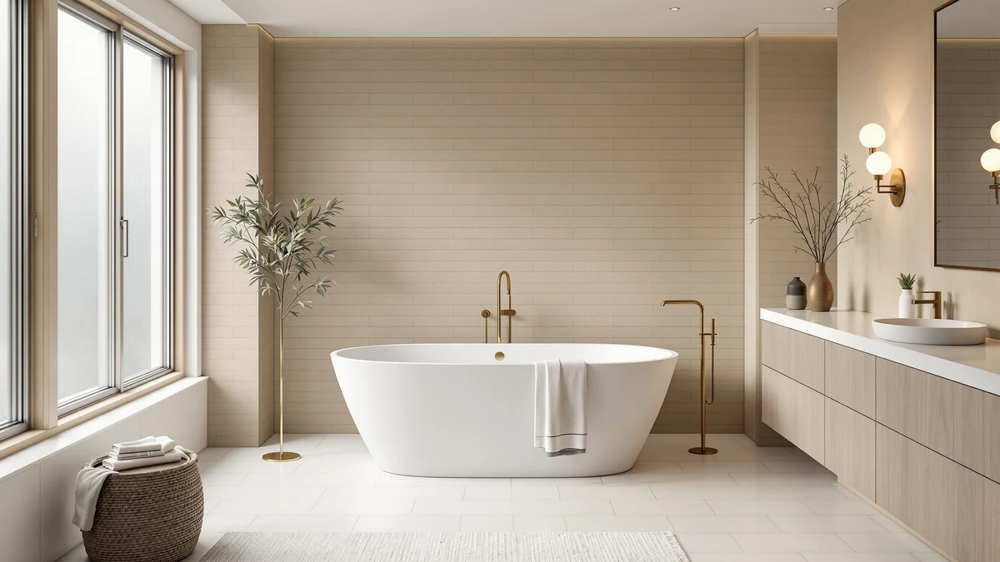

Quick Answer
The FerdY Bali 55" Freestanding Bathtub is worth considering if you need a compact 55-inch tub for a smaller bathroom and like FerdY's Bali styling, but at $909.99 it costs more than the three alternatives in this review, which range from $859.99 to $899.00 and measure longer. If floor space is tight and 55 inches is the largest tub that fits, the Bali is a reasonable pick; otherwise the Empava, WOODBRIDGE, or Mokleba below give you more tub for less money.
Our pick: FerdY Bali 55" Freestanding Bathtub — $909.99 Check Price on Amazon
Bottom line: our top pick is the FerdY Bali 55" Freestanding Bathtub at $909.99.
Things to Know Before You Buy
- The FerdY Bali measures 55 inches long, the shortest tub in this review; the Empava, WOODBRIDGE, and Mokleba alternatives below range from 59 to 67 inches.
- At $909.99, the Bali costs more than any of the three alternatives compared in this review, which run from $859.99 to $899.00.
- FerdY's listing does not publish a material or capacity specification for the Bali the way some competing brands do, so measure your bathroom and confirm details with the seller before ordering.
- Freestanding tubs this size typically need a floor-mount or wall-mount faucet purchased separately, plus confirmation that your bathroom floor can support the tub's filled weight.
- Compare the Bali against the three alternatives further down this page before you decide, since a few extra inches of length can change how comfortably you fit in the tub.
This FerdY Bali 55" Freestanding Review looks at whether the newest tub in FerdY's Bali line earns a spot in a small bathroom, based on its price, size, and how it stacks up against three other freestanding soaking tubs.
The short version: the Bali is the smallest and the most expensive of the four tubs we compared here. At $909.99 and 55 inches long, it costs more than the Empava, WOODBRIDGE, and Mokleba alternatives below while offering less length than any of them. That tradeoff only makes sense if your bathroom can't fit a longer tub or you're drawn specifically to FerdY's Bali styling. This review breaks down exactly where that math works in the Bali's favor and where it doesn't.
Why You Should Trust Us
Best Freestanding Bathtubs is edited by Ilane Tall, who researches and compares bathroom fixtures for a living. For this FerdY Bali 55" Freestanding review, we compared the manufacturer's published price and dimensions against three other freestanding tubs in the same size and price range, and we checked how the listings themselves describe materials, capacity, and styling. We do not run a fake testing lab, and we have not physically installed this tub in our own bathroom. Our conclusions come from comparing publicly available product data, not hands-on use.
Our Research Experience
We didn't unbox this tub in our own bathroom, so this section is about what we checked rather than what we felt handling it. Price and length are hard numbers, so we said so plainly where the Bali wins or loses on those. Materials and capacity are murkier: FerdY doesn't publish a spec for either on the Bali 55, and rather than guess at a number, we flagged that gap so you know to confirm it with the seller before you buy.
Overview & Specs

FerdY Bali 55" Freestanding Bathtub
What we like
- At 55 inches long, it fits a footprint that the 59-to-67-inch alternatives in this review cannot match, which matters if your bathroom is tight on floor space
- Part of FerdY's Bali line, so it carries distinct styling from the more common WOODBRIDGE, Empava, and Mokleba tubs compared here
- Its Amazon listing includes five product photos, giving you multiple angles to check the finish and hardware before you buy
Flaws but not dealbreakers
- At $909.99, it's the most expensive tub in this review, costing $10.99 more than the Empava, $30.99 more than the WOODBRIDGE, and $50.00 more than the Mokleba
- FerdY's listing doesn't publish a material or capacity specification for the Bali, so you're working with less published detail than some competing brands provide
- At 55 inches, it offers less length than any of the three alternatives in this comparison, which range from 59 to 67 inches
| Material | — |
| Size | Bali 55" |
The FerdY Bali 55" Freestanding Bathtub is the compact option in this comparison, built for bathrooms where the 59-to-67-inch alternatives below simply won't fit. Coming from FerdY's Bali line, it carries a distinct look from the WOODBRIDGE, Empava, and Mokleba tubs in this review, though FerdY's Amazon listing does not spell out the shell material or soaking capacity, a detail a few rival brands do publish for their own tubs. At $909.99, it's currently listed at the highest price of the four tubs covered in this FerdY Bali 55" Freestanding review, priced above the Empava 67" ($899.00), the WOODBRIDGE 59" ($879.00), and the Mokleba 62" ($859.99).
That price gap is worth sitting with before you buy. You're paying more for five inches less length than the WOODBRIDGE 59" and twelve inches less than the Empava 67", without a published material spec to justify the premium. Where the Bali makes its case is footprint: 55 inches is short enough to clear bathrooms that can't accommodate any of the three alternatives, and if that's your constraint, the extra cost buys you a tub that physically fits when the others don't.
What We Liked
The FerdY Bali 55" Freestanding Bathtub's biggest strength is its footprint. At 55 inches, it's short enough for bathrooms that can't fit the 59-to-67-inch alternatives in this review, and that single measurement can be the difference between a tub that fits your renovation and one that doesn't. The Bali name also signals that FerdY is positioning this tub as part of a styled collection rather than a generic listing, which appeals to a buyer who wants their bathtub to match a specific aesthetic rather than picking whichever freestanding tub happens to be cheapest.
The listing includes five product photos, more angles than a bare-bones listing typically offers, so you can check the drain placement, rim shape, and finish before committing to a purchase you can't easily return once it's installed.
What Could Be Better
Price is the clearest drawback in this FerdY Bali 55" Freestanding review. At $909.99, the Bali costs more than every alternative in this comparison, and FerdY doesn't publish a material or capacity specification to explain the premium, something a few of its rivals do provide. You're asked to pay more for less published detail, which is a harder sell than a tub that costs less and tells you exactly what you're getting.
Size cuts the other way too. Five inches shorter than the WOODBRIDGE 59" and twelve inches shorter than the Empava 67", the Bali gives a taller bather less room to stretch out. If your bathroom can accommodate a longer tub, the alternatives below likely offer more soaking room for less money.
Who Is It For?
Buy the FerdY Bali 55" Freestanding Bathtub if your bathroom's footprint is the deciding factor and 55 inches is close to the maximum length you can fit. It also suits a buyer drawn specifically to FerdY's Bali styling who's willing to pay a premium for that look over a longer alternative.
Skip it if you have the floor space for a longer tub, since the WOODBRIDGE 59", Empava 67", and Mokleba 62" in this review all cost less and measure longer. Skip it too if you want a manufacturer-published material and capacity spec to compare directly against other tubs, since FerdY doesn't provide one for the Bali on this listing.
Alternatives to Consider
If the FerdY Bali 55" Freestanding Bathtub's price or its 55-inch length rules it out, the three alternatives below give you more length for less money. Here's how the Empava, WOODBRIDGE, and Mokleba compare on price and size.

Editor’s Pick
Empava 67" Luxury Freestanding Soaking
The Empava is the longest tub in this comparison at 67 inches, twelve inches longer than the FerdY Bali 55", and it costs $10.99 less at $899.00. That extra length makes it the pick if you want more room to stretch out and don't need the Bali's compact footprint. Like the Bali, Empava's listing doesn't spell out a material or capacity spec here, so measure your doorway and bathroom floor before ordering a tub this long. For a bathroom that can accommodate 67 inches, the Empava undercuts the Bali on price while offering a foot more length.
$899.00
Check Price on Amazon
Best Value
WOODBRIDGE 59" L x 28-3/4"
At 59 inches, the WOODBRIDGE splits the difference between the Bali's compact 55 inches and the Empava's roomier 67 inches, and at $879.00 it's $30.99 cheaper than the Bali. If your bathroom has a little more room than 55 inches but can't fit a 67-inch tub, the WOODBRIDGE's middle-ground length and lower price make it worth a look before you commit to the Bali.
$879.00
Check Price on Amazon
Premium Choice
Mokleba 62" Lucite Acrylic Freestanding
The Mokleba is the cheapest tub in this review at $859.99, a full $50.00 less than the FerdY Bali 55", and at 62 inches it's seven inches longer too. If budget is your main constraint, the Mokleba beats the Bali on both price and length, though you should still confirm the listing's current specs directly on Amazon before buying, since details can change.
$859.99
Check Price on AmazonFrequently Asked Questions
How big is the FerdY Bali 55" Freestanding Bathtub?
The FerdY Bali measures 55 inches long, based on the size listed in its product name and specs table. That makes it the shortest of the four tubs compared in this FerdY Bali 55" Freestanding review; the Empava, WOODBRIDGE, and Mokleba alternatives range from 59 to 67 inches.
Is the FerdY Bali 55" Freestanding Bathtub worth the price?
At $909.99, the Bali costs more than the three alternatives in this review, which range from $859.99 to $899.00, and FerdY does not publish a material or capacity specification to explain the premium. It's worth the price mainly if 55 inches is the longest tub your bathroom can fit; otherwise the cheaper, longer alternatives below are a stronger value.
How does the FerdY Bali 55" compare to the WOODBRIDGE, Empava, and Mokleba tubs?
The Bali is the shortest and most expensive of the four tubs in this comparison. The WOODBRIDGE 59" costs $30.99 less, the Empava 67" costs $10.99 less while offering 12 more inches of length, and the Mokleba 62" is the cheapest option at $50.00 less than the Bali. Choose the Bali for its compact footprint and Bali styling; choose one of the alternatives if price or length matters more to you.
Final Verdict
This FerdY Bali 55" Freestanding review comes down to a simple tradeoff: you're paying more for a shorter tub. At $909.99, the FerdY Bali costs more than the Empava, WOODBRIDGE, and Mokleba alternatives covered here, and none of the size comparisons favor it, since all three alternatives measure longer. If 55 inches is the largest tub your bathroom can fit and you're drawn to FerdY's Bali styling, it's a reasonable choice. For most other bathrooms, the WOODBRIDGE 59", Empava 67", or Mokleba 62" deliver more length for less money.